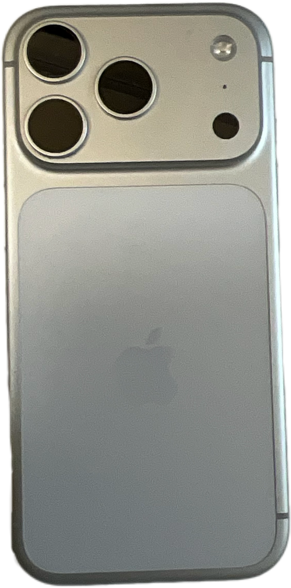

← Back to Collection 006
COLLECTION 006 / ITEM 06
Vintage iPhone
- Material
- glass, aluminum, electronic components
- Manufacturer
- Apple
- Time
- 2025
Historical records identify this object as an early model of the iPhone, a device used for communication, photography, and information storage. Unlike modern iPhones, which are integrated with ocular and neural systems, this model required a physical screen and manual touch to operate. The device is relatively heavy and features three separate cameras on the back. In modern cyborg society, cameras are fully integrated into the eyes, making external cameras and the need to carry a physical device seem outdated.
